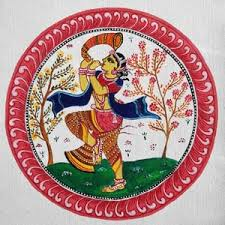

Pattachitra style of painting is one of the oldest and most popular art forms of Odisha. The name Pattachitra has evolved from the Sanskrit words patta, meaning canvas, and chitra, meaning picture. Pattachitra is thus a painting done on canvas, and is manifested by rich colourful application, creative motifs and designs, and portrayal of simple themes, mostly mythological in depiction.
Some of the popular themes represented through this art form are Thia Badhia - depiction of the temple of Jagannath; Krishna Lila - enactment of Jagannath as Lord Krishna displaying his powers as a child; Dasabatara Patti - the ten incarnations of Lord Vishnu; Panchamukhi - depiction of Lord Ganesh as a five-headed deity. More than anything, the themes are clearly the essence of the art form, conceptualising the meaning of the paintings. It is no surprise therefore that the process of preparing the paintings engages undeterred concentration and careful craftsmanship, stretching the preparation time of the patta alone to around five days.
Making the patta is the first thing that comes in the agenda, and the painters, also called chitrakars, go about their work in preparing a tamarind paste, which is made by soaking tamarind seeds in water for three days. The seeds are later pounded with a crusher, mixed with water, and heated in an earthen pot to turn it to a paste, which is called niryas kalpa. The paste is then used to hold two pieces of cloth together with it, and coated with a powder of soft clay stone a couple of times till it becomes firm. Soon as the cloth becomes dry, the final touch of polishing it with a rough stone and then a smooth stone or wood is given, until the surface becomes smooth and leathery, and is all ready as a canvas to be painted on.
Preparing the paints is perhaps the most important part of the creation of Pattachitra, engaging the craftsmanship of the chitrakars in using naturally available raw materials to bring about indigenous paints. The gum of the kaitha tree is the chief ingredient, and is used as a base for making different pigments, on which diverse raw materials are mixed for diverse colours. Powdered conch shells, for instance, are used for making a white pigment, while lamp soot is used for a black pigment. The root of the keya plant is usually used for making the common brush, while mouse hair is used on the requirement of finer brushes, to be attached to wooden handles.
The creation of the Pattachitra paintings is a disciplined art form, and the chitrakars maintain rigidity in their use of colours and patterns, restricting the colours to a single tone. Limiting themselves within the boundaries of some rules, the chitrakars come up with such remarkable paintings depicting stark emotional expressions that it is a surprise shading of colours is a taboo. In fact, it is this display of emotions of the figures expressed in the paintings, which is the crème de la crème of the art form, and the chitrakars put in their best to bring out the most through their rich colourful motifs.
With the passage of time, the art of Pattachitra has gone through a commendable transition, and the chitrakars have painted on tussar silk and palm leaves, and even created wall hangings and showpieces. However, this kind of innovativeness has never proved to be a hindrance in their customary depiction of figures and the use of colours, which has remained intact throughout generations. This constancy is the key factor that has maintained the effervescence of Pattachitra, backed with the fact that the setting up of some special centres for the art form in Odisha speaks volumes for its popularity.
